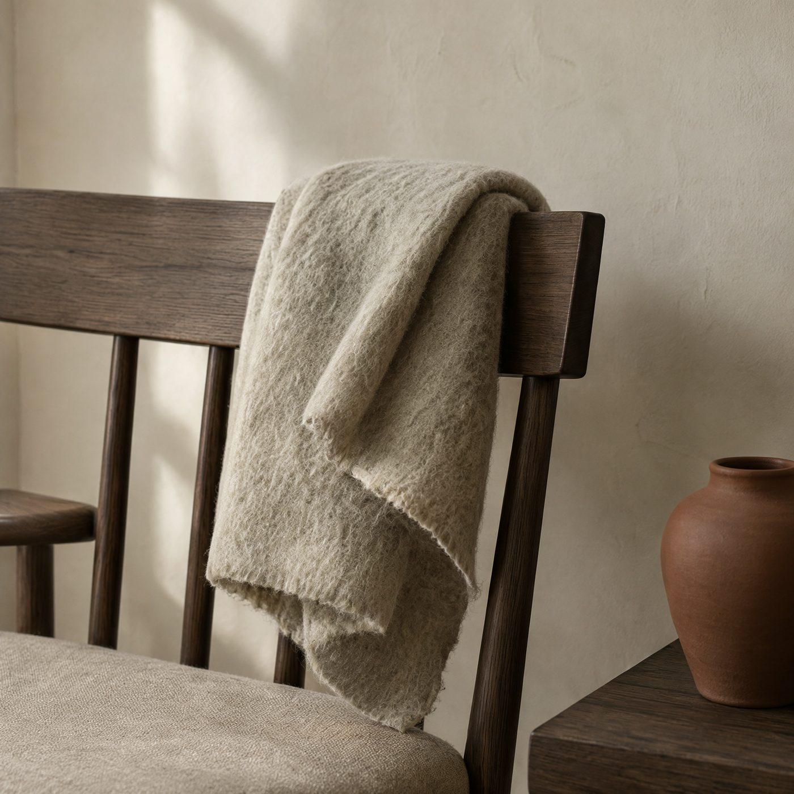
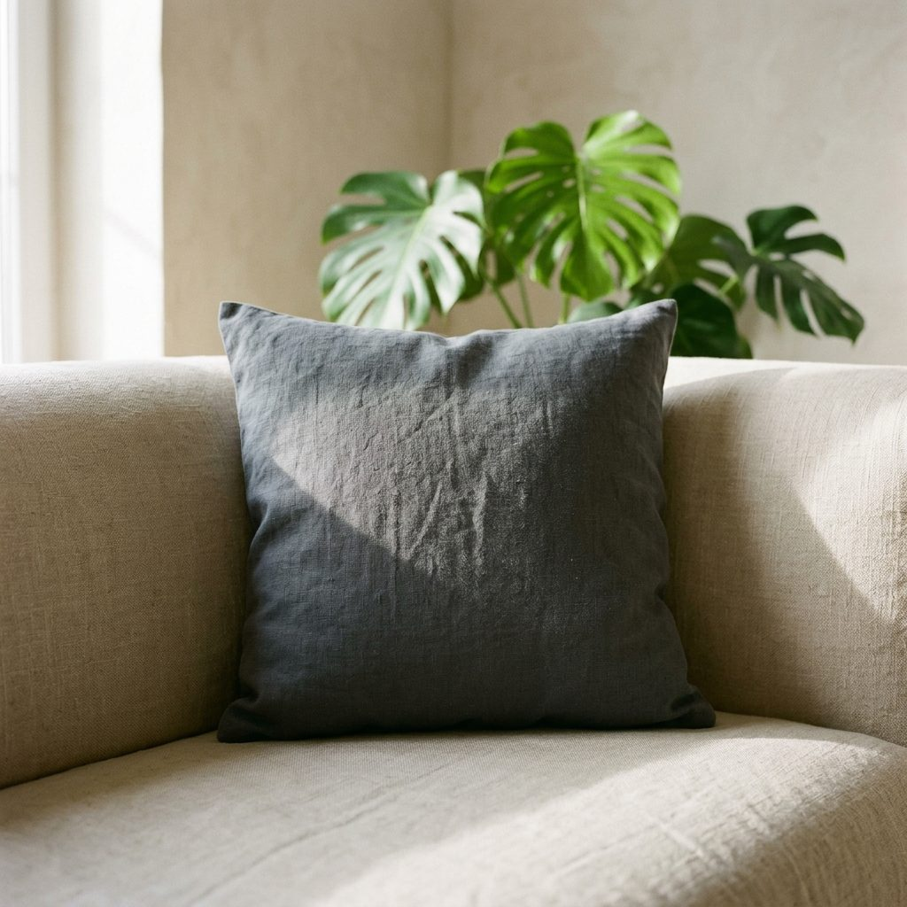
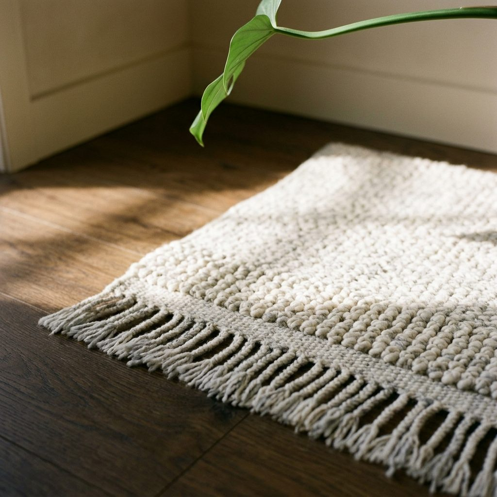
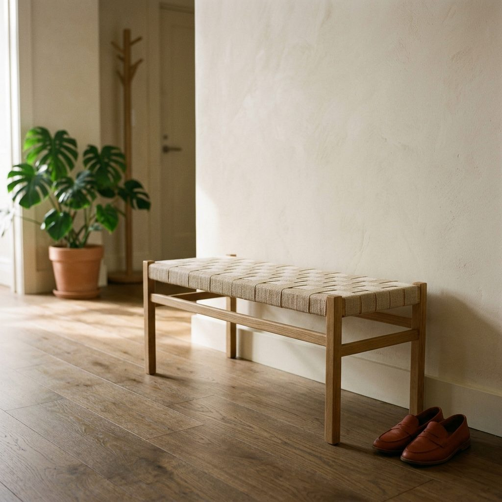

Collections / Hiver / Plaid Brume
240 $
Laine bouillie, 140 x 200 cm
Tissé dans un atelier portugais qui travaille la laine depuis quatre générations. La laine est bouillie après tissage, ce qui resserre la fibre et donne ce poids inhabituel : 1,8 kg, assez pour qu'il tienne sur un dossier de fauteuil sans glisser.
Le bord est laissé brut, volontairement. Il s'adoucit au premier lavage et ne bouge plus ensuite.
Expédition sous 5 jours · retours 14 jours · dernières pièces
100 % laine vierge, non traitée, non teinte en surface. La couleur vient du mélange de toisons, pas d'un bain. C'est pourquoi chaque pièce varie légèrement.
Un tissage familial près de Guimarães, au nord du Portugal. Douze personnes, des métiers à tisser des années soixante encore en service. Série de 90 pièces.
Aérer plutôt que laver. Nettoyage à sec une fois par an au maximum. Une tache se tamponne à l'eau froide, jamais à chaud : la laine bouillie feutre encore.
Coussin Ardoise
95 $
Banc Sillon
620 $
Tapis Givre
980 $